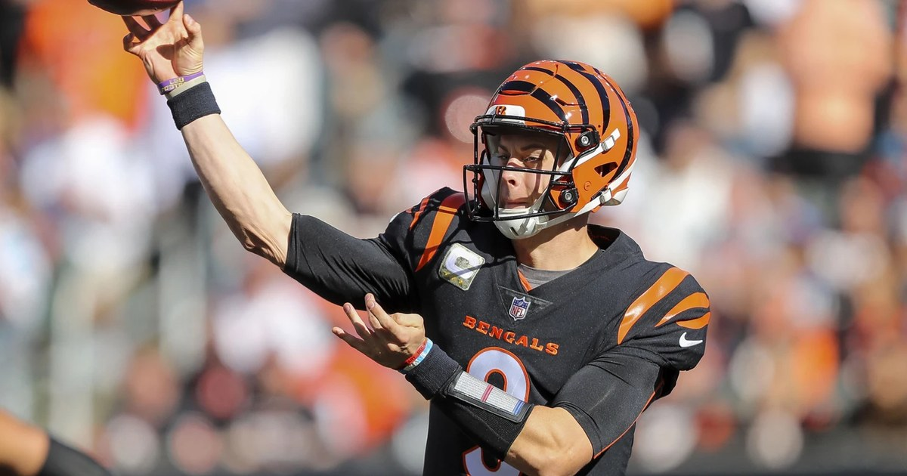

TSL Bets: Joe Burrow OVER 2.5 passing touchdowns vs. Commanders (-116)
Joe Burrow has thrown 3+ touchdowns in five straight games — 27 TD passes in nine games — and Washington owns the NFL's second-worst pass defense. The play: Burrow OVER 2.5 passing touchdowns (-116, DraftKings) on Monday Night Football.

The game slip
Cincinnati Bengals (7-2) at Washington Commanders (3-5-1)
Monday, 8:15 PM ET — Northwest Stadium, Landover, MD (ESPN)
• Spread: Bengals -6
• Total: 54.5
• Moneyline: Bengals -295 / Commanders +240
• Odds source: BetMGM, November 23
• Weather: Cloudy, 56°F at kickoff, NW wind ~7 mph, 0% rain — no factor
Injury report — Bengals: G Dalton Risner OUT (knee). LB Oren Burks OUT (groin, IR). WR Andrei Iosivas doubtful (thumb). CB Jalen Davis doubtful (hamstring). G Dylan Fairchild questionable (oblique — practiced fully Saturday). S Kyle Dugger questionable (quadriceps). CB Dax Hill questionable (illness). LB Swayze Bozeman questionable (forearm). G Brian Parker II questionable (knee). Burrow carries no designation (illness cleared, full practice all week). Tee Higgins carries no designation (knee, full participant).
Injury report — Commanders: RB Jacory Croskey-Merritt questionable (groin). RB Rachaad White questionable (heel). C Lucas Patrick questionable (concussion). CB Amik Robertson questionable (ankle). QB Jayden Daniels is healthy — 23-of-33 for 249 yards and 3 touchdowns last week against the Giants. WR Terry McLaurin is on IR (knee, out for the season).
Storylines: Burrow is playing the best football of his career: 27 touchdown passes in nine games (3.0 a game), 3+ in five straight — 4 vs. Pittsburgh, 3 vs. Atlanta, 5 vs. Tennessee, 4 at Baltimore, 4 at Miami, newest first — and 409 yards with 4 touchdowns in last week's 38-18 win over the Steelers, when Ja'Marr Chase caught 11 passes for 231 yards. The Bengals have won five straight and sit 7-2. Washington ranks second-worst in the NFL in passing yards allowed (244.8 a game), and its secondary is thin with Robertson questionable. The 54.5 total is the highest on the Week 11 board — the market expects a shootout, and shootouts are where Burrow piles up touchdowns.
The bet
Joe Burrow OVER 2.5 passing touchdowns (-116, DraftKings)
Why this prop
The trend and the matchup point the same way. Burrow has cleared 2.5 passing touchdowns in five straight games and in 7 of 9 this season, averaging 3.0 a game, and he faces a Washington defense that gives up 244.8 passing yards a game — second-worst in the league — with a questionable corner and a backup-caliber secondary behind him. He has two elite receivers in Chase and Tee Higgins (824 yards, 6 touchdowns) plus Chase Brown out of the backfield, and the total says points will flow. This is the props-first single by the book: a player prop with a real trend edge, a real matchup edge, and a near-even price.
The honest caveats
The interior line is the risk: starting guard Dalton Risner is out and fellow guard Dylan Fairchild is questionable, and Washington blitzes heavily — pressure can turn touchdown drives into field goals. Burrow can also vulture a score on the ground himself (he ran one in against Tennessee), which helps the Bengals but not this prop. And if Cincinnati pulls away early behind the -6 spread, the fourth quarter belongs to the run game. The edge is real, but it is an edge, not a lock.
The record
TSL Bets is 22-38 in November, 26-59 all-time.
If you or someone you know has a gambling problem, call 1-800-GAMBLER.
Sources
• Best NFL Picks and Predictions Today: Bengals vs. Commanders (SI, odds via DraftKings)
• Bengals vs. Commanders Predictions, Player Props & Best Bets (bet365 News)
• Cincinnati Bengals at Washington Commanders odds, picks and predictions (USA TODAY / BetMGM)
• Bengals vs. Commanders: Line Movement, Odds & Injuries (The Sharp Edition)
• Burrow has 27 TD passes, Higgins 824 receiving yards through nine games (Wire Report)